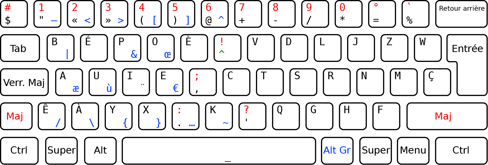
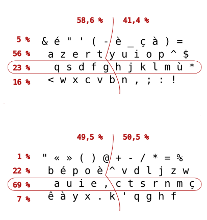

En construction
Le BÉPO est une disposition de clavier adaptée au français et sous licence libre.


Il y a plusieurs façons d’installer le BÉPO dont :
Commencez par télécharer l’installeur. Executez-le. Une fois installé, allez dans le menu de langue et choisissez le BÉPO.
Commencez par téléchager PKL. Décompressez le fichier téléchargé. Dans le sous-dossier, exécutez pkl-bepo-1.1rc2.exe.
Commencez éventuellement par imprimer la 2ème page de ce document, et placez-la à côté de votre ordinateur.
Plusieurs logiciels existent pour apprendre à taper en BÉPO.
Tipp10 est un logiciel fait pour apprendre à taper en BÉPO sans installation ni droits d’administrateur. Il utilise des leçons progressives et il est possibles de créer ses propres textes. Si vous êtes sous Linux, il vous faudra modifier le logiciel à la main.
Télécharger Tipp10 (vous aurez besoin de 7-zip)Bépoète est un site utilisant la même méthode que Tipp10, mais il y a plusieurs différences :